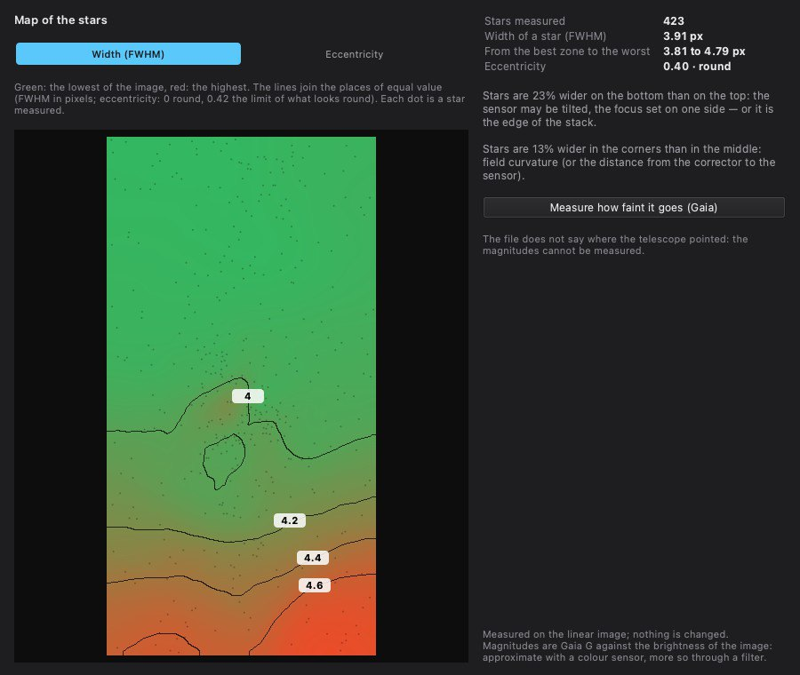

Measurement
Analysis tool
Maps the width (FWHM) and the eccentricity of the stars over the whole field; with Gaia, gives the limiting magnitude and the surface-brightness limit.
How to use it

- Open a linear stack, before any stretch, and click Analysis.
- Choose the map: Width (FWHM) or Eccentricity. The diagnosis is written beside it.
- Measure how faint it goes (Gaia) adds the limiting magnitude and the surface-brightness limit.
Settings
- Width (FWHM)
- Map of the star width, in pixels and arcseconds, with contour lines.
- Eccentricity
- Map of the elongation of the stars: 0 is round, 0.42 the limit of what looks round.
- Measure how faint it goes (Gaia)
- Limiting magnitude at 5 σ and surface-brightness limit at 3 σ over 10″ × 10″.
When to use it
On a linear stack, to assess it before processing: sensor tilt, field curvature, tracking, depth reached.
Image
Measures the linear stack; nothing is changed.
Example